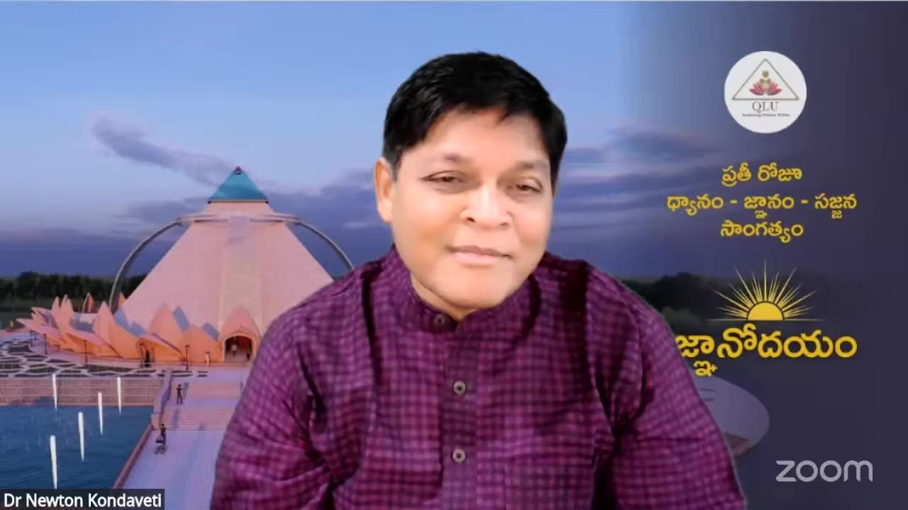

01 · Monthly Wisdom & Key Teachings · Full story
Devi’s Power Reflected in Nature — Recognizing the Creative Power in Our Words
In his eighth-day teaching on Devi Navratri, Dr. Newton Kondaveti explains that worship is not simply remembering a form of the Divine Mother. It also means recognizing that energy in life and allowing it to transform our conduct. Respecting nature as Mother, noticing the effect of our words on other hearts, and understanding the role of experience in the passage of time are all part of spiritual practice. The teaching then turns to Mahasaraswati and Self-knowledge, the story of King Suratha and the merchant Samadhi, the seven stages of knowledge, and the meaning of surrender.
Divine Energy — Seeing Nature as Mother
The central purpose of Navratri practice is inner transformation. The battles between gods and demons in the Puranas, the speaker suggests, can be read not only as external events but also as symbols of the struggle among sattva, rajas, and tamas within us. Outer circumstances can invite us to examine our own tendencies. If we search for enemies only outside ourselves, we may miss what needs to change within.
He asks a pointed question: how can we worship the Divine Mother while polluting the very nature we regard as her manifestation? Cutting forests, discarding plastic into rivers and seas, and harming living creatures have consequences shared by the wider community. Offering reverence at a shrine while leaving its surroundings dirty exposes a contradiction in our worship.
Earth should not be regarded as mere soil, he says, but as Bhudevi, the Mother who supports us. Respect, love, and gratitude toward the mother who gave us birth can nurture our sense of reverence for the Divine Mother. Connection does not require physical proximity; it can be a lasting bond of the heart. The speaker worries that a generation constantly connected to technological devices may become disconnected from nature.
Invoking sarvam khalvidam brahma, he describes a unity underlying the diversity of creation. He mentions the minute structure of matter to evoke wonder at creation; this is part of his spiritual illustration, not independent scientific evidence for a metaphysical claim. Cleaning our own house while throwing rubbish into a neighbor’s space or the street contradicts the understanding of unity. If we truly recognize the same Self in everyone, our behavior toward others must reflect that recognition.
Anger — The Wounds Words Leave Behind
To illustrate the effects of angry speech, the speaker tells the story of a father and his son. The boy frequently lost his temper and spoke hurtful words. To make him aware of his anger, his father asked him to hammer a nail into a wall every time he became angry. On the first day the boy drove thirty-six nails. The wall made visible just how often anger took hold of him.
After some time, the father asked him to remove the nails one by one. The nails were gone, but the holes remained. Words spoken in anger can likewise leave wounds in another person’s heart. A word cannot be unsaid; even an apology may not entirely erase its effect. This is why awareness of speech matters.
The story leads back to the teaching of inner unity. To insult another person is not merely to hurt someone separate from ourselves; it also contradicts the understanding that the same consciousness is present in all. Knowing the doctrine of divine energy is one thing. Expressing that understanding through love, respect, and restraint in speech is another. The speaker compares a word to a sword: once uttered, it can pierce another person and leave a wound. He also emphasizes that a connection with the Divine Mother cannot remain merely theoretical; genuine respect and gratitude toward the mother who gave us birth can make that relationship a lived experience. Spiritual practice closes the distance between intellectual knowledge and experience.
The Flow of Time — Learning Through Experience and Moving Toward Liberation
We distinguish people by their bodies, names, qualities, and circumstances. The speaker offers another perspective: each person passes through a different journey of time and experience. He compares time to a river flowing in one direction. As rivers follow different bends before meeting the ocean, he describes the journey of the individual soul, in his spiritual framework, as moving toward liberation and Brahma-jnana.
From birth onward, the physical body changes, ages, and eventually dies. In discussing creation, preservation, and dissolution, he points to continual change in nature. Yet while the body undergoes its journey, the seeker’s inward search may move toward Self-realization.
The mind labels pleasant experiences as good and painful ones as bad. The speaker suggests that, from the standpoint of spiritual evolution, every experience may offer something to learn. Dreams, experiences during meditation, reading, self-study, and the company of seekers can each broaden understanding. This does not dismiss suffering; it invites us to learn from experience.
Reflecting on fear of death, darkness, and emptiness, he introduces another possibility: a person may hesitate not only before inner darkness but also before accepting the greatness of the light within. This leads to the teaching on Mahasaraswati.
Time, the Body, and the Journey of the Self — Further Explanations
The teacher begins with familiar expressions such as “your time is good” and “my time is not good.” Two people living in the same period can undergo very different experiences. He therefore speaks of time not merely as a number on a clock but as a journey each person experiences. Just as a river keeps flowing despite its bends, the seeker is invited not to lose sight of the spiritual destination amid life's changes.
He points to the changing functions of bodily cells and tissues with age and uses the imagery of creation, preservation, and dissolution. The teaching does not deny bodily decline; it invites inquiry while witnessing it: “Am I only this changing body?” Death is compared with darkness as an image of fear before the unknown. Lighting a lamp in a dark room becomes a metaphor for approaching that uncertainty with awareness.
Dream experiences, events in waking life, inner experiences during meditation, and understanding gained through study are presented as different opportunities in the same journey of learning. Rather than stopping at the mind's labels of “good” and “bad,” the seeker is encouraged to ask what each experience has revealed.
Mahasaraswati — Accepting the Light Within
It is relatively easy to hear Self-knowledge as an idea. Accepting aham brahmasmi — “I am Brahman” — as an experienced truth can be much harder. The speaker describes obstacles such as underestimating ourselves, doubting our capacities, and finding it difficult to accept the magnitude of our true nature.
Mahasaraswati is presented here as a symbol of knowledge, discernment, and inner illumination. Recognizing the light within is not an invitation to inflate the ego. It is an invitation to investigate our real nature. The Divine Mother’s form is not meant to remain only an object of external worship; the wisdom it signifies is to awaken within.
Exemplars Who Point Toward Wisdom
By asking whose portraits we keep in our homes, the teacher invites reflection on the people we choose as exemplars. Images of seekers and teachers such as the Buddha and Patriji are not merely decorations; they can remind us of the path of Self-knowledge they represent. He connects Mahasaraswati's grace not only with book learning but with the longing to experience one's true nature.
Musical skill and beautiful speech are also commonly described as gifts of Saraswati, he observes. In this teaching, however, his central emphasis is on higher wisdom—direct recognition of “I am the Self.” Respect for outward talents remains, but the purpose of Navratri's pursuit of knowledge is to recognize the light within.
Suratha and Samadhi — What We Ask For Reflects Our Inner State
Drawing on the Devi Mahatmya of the Markandeya Purana, the speaker tells of King Suratha, the merchant Samadhi, and Sage Medha. Suratha lost his kingdom after an attack by rival rulers and betrayal by his own ministers. Even after withdrawing to the forest, his mind remained attached to the kingdom. He worried about his people and wondered what had become of his former responsibilities.
Samadhi had been a successful merchant, but his wife and children deceived him and drove him away. Although they had hurt him, he continued to worry about their well-being. One man had lost a kingdom and the other his place in the family; both remained attached to what they had lost. This contradiction becomes the central question of the story.
They reached Sage Medha’s hermitage. The speaker invites attention to the significance of the names Suratha, Samadhi, and Medha, the last suggesting discernment. The sage heard their distress and showed them a path of practice. After intense spiritual practice, the Divine Mother appeared and invited them to ask for a boon. The speaker relates this part of the story to his own spiritual interpretation of meditation, the ajna chakra, and the power of intention.
Suratha asked to regain his kingdom. Samadhi asked instead for Self-knowledge, or Brahma-jnana, that would release him from the roots of his sorrow. Both received what they sought. Suratha regained his kingship and, according to the story, would become a Manu in a later age. Samadhi attained the knowledge and state of absorption he had sought.
The point is not simply to judge one request as superior. The speaker uses their different wishes to show how a person’s desires reflect the state of their inner development. Our intentions, speech, actions, and aims all reveal something about us. Recalling Patriji’s emphasis on speech, he encourages truthful and respectful words rather than abuse.
Practice, Intention, and Speech
In the story, Sage Medha does not immediately offer external solutions to Suratha and Samadhi. He directs the two troubled men toward spiritual practice. The teacher links this to his explanation of intention in meditation and the ajna chakra. He invokes images such as Kamadhenu, the wish-fulfilling tree, and the inexhaustible vessel to emphasize a question: “What are we asking for?” These are spiritual symbols within his interpretation.
Suratha's request to regain his kingdom and Samadhi's request for Self-knowledge reveal different aspirations. Rather than belittling either man, the story asks us to see how our wishes disclose the attachments still active within us. The teacher then turns to purity of speech: words, intentions, and desired blessings can all serve as material for self-examination. In this context he recalls Patriji's emphasis on the power and responsibility of speech.
The Seven Jnana Bhumikas — Seven Steps in the Inner Journey
The speaker compares the sapta jnana bhumikas, the seven stages of knowledge described by sages, to a ladder. They are not a tool for ranking other people. They are a framework for examining our own practice and seeing what the next step requires.
1. Shubhechha — A Sincere Desire for Knowledge
An event, a painful experience, or a teacher’s words may awaken a person to spiritual inquiry. On hearing of meditation, Self-knowledge, or Brahma-jnana, one may feel a genuine desire to discover that state and be free from sorrow. When this wish becomes a sincere intention rather than a passing remark, the speaker calls it shubhechha. It is the beginning of practice.
2. Vicharana — Inquiry into the Path
Once the desire arises, questions follow: How is Self-knowledge attained? How should one meditate? The seeker learns about meditation, self-study, and the company of good people; asks questions; and investigates the method of practice. The speaker names meditation, self-study, and satsanga as three important disciplines. Even practical questions about sitting and attending to the breath belong to this stage of inquiry.
3. Tanumanasi — Turning Understanding into Practice
Knowledge gained through inquiry now becomes action. Sitting steadily and comfortably, attending to the breath, and allowing the density of thoughts to lessen are aspects the speaker associates with tanumanasi. He illustrates the reciprocal influence of body and mind: mental distress can feel physically heavy, while bodily pain can disturb the mind. Making the mind “thin” means reducing its restlessness and approaching inner silence. Consistency in meditation, self-study, and good company matters here.
4. Sattvapatti — Inner Purification and the Beginning of Direct Insight
As practice deepens, the speaker describes increasing purity and meditative experience. In his spiritual vocabulary, the influence of rajas and tamas diminishes, sattva increases, and a practitioner may speak of purification of the subtle channels and movement of energy. He identifies sattvapatti as the fourth stage. The truth expressed by aham brahmasmi may become intellectually clear without yet being established as complete direct experience. He uses the term Brahmavid for a seeker at this level.
5. Asamsakti — Less Outer Attachment, More Inwardness
The fifth stage is asamsakti. As inward experiences become more important, attraction to wealth, display, and unnecessary distractions may decline. The speaker associates this stage with references to the ajna chakra and the “third eye.” A drop of water resting on a lotus leaf illustrates living in the world without clinging to it. Solitude can become an opportunity for practice rather than loneliness. The seeker may value silence and speak less. No one else can undertake the inward journey on one’s behalf. The speaker uses the title Brahmavidvara here.
6. Padarthabhavana — Intention, Experience, and Savikalpa Samadhi
The sixth stage is padarthabhavana. The speaker describes deeper meditative experiences, including states he calls savikalpa samadhi, while some questions or intentions may remain. Through the distinction among word, meaning, and object, he discusses the relationship between language, thought, intention, and experienced reality. References to energy, matter, and Einstein’s ideas are part of his spiritual analogies, not scientific proof that every spoken word literally becomes a physical object. He calls a seeker at this stage Brahmavidvariya.
7. Turiyaga — Nirvikalpa Samadhi and Witness-Consciousness
The seventh stage is turiyaga. The speaker associates it with the resolution of doubts that remain in savikalpa samadhi, with nirvikalpa samadhi, witness-consciousness, and the awakening of sahasrara. He describes those established in this state as helping others progress and guiding new masters. He uses terms such as Brahmavidvarishtha and Buddha in this discussion.
He then makes an important distinction: statements about karma and rebirth may sound different when expressed from the ordinary waking, dream, or deep-sleep states than when expressed from the standpoint of turiya. When reading the teachings of sages such as Ramana Maharshi, he urges listeners to consider the experiential standpoint from which the sage speaks. A declaration such as “there is no karma” should not be transferred uncritically into everyday life.
Taken together, these seven steps are not merely a list of names. They form a map of self-examination: from sincere intention to inquiry, from disciplined practice to purification, from non-attachment to deeper knowledge, and finally toward the witnessing state. The measure is not comparison with others but genuine transformation within oneself.
Non-Attachment, Silence, and the Solitary Nature of Practice
When explaining asamsakti, the teacher invokes the image of a drop of water resting on a lotus leaf. The point is to live in the world and carry out one's responsibilities without becoming inwardly bound to them. He describes a shift from fascination with outward things toward interest in inner practice. He also recommends some silence rather than constantly describing one's meditation experiences.
Meditation, he says, is an inward journey that each person must undertake. People may sit together to practice, but entering one's own inner experience remains personal. He also compares this with the individual nature of death. The teaching is not a blanket celebration of loneliness; it is a reminder that responsibility for self-inquiry cannot be handed to another person.
Subtle Distinctions Among the States of Knowledge
At the earlier steps, the seeker understands teachings and scriptures intellectually. The teacher then distinguishes meditation experiences, inner silence, and states of samadhi. In his explanation, savikalpa samadhi may still involve lingering doubts or distinctions, whereas nirvikalpa samadhi is associated with a more complete realization. He uses terms such as Brahmavid, Brahmavidvara, Brahmavidvariya, and Brahmavidvarishtha to express differences among these states; their meaning here must be read in the context of the original discourse.
In discussing padartha-bhavana, the teacher explores the relation between pada (word), artha (meaning), and padartha (thing or matter) from his spiritual perspective. He describes a relationship among intention, speech, and experienced reality. His references to matter and energy should be presented as illustrations or the speaker's interpretations, not as independent demonstrations of physics.
When speaking about the final stages, the teacher cautions that statements some sages make about karma and rebirth from the turiya state may appear contradictory to those at an ordinary level of experience. Referring to figures such as Ramtha and Ramana Maharshi, he encourages listeners not to detach a statement from the state of experience in which it is expressed. These are the teacher's spiritual interpretations, not claims established for every reader.
Surrender to the Divine Mother — Turning Knowledge into Experience
The teaching closes by inviting an attitude of surrender. To surrender is to open the inner being with the feeling of offering one’s energy to the Divine Mother. Gratitude toward the mother who gave us birth and remembrance of the Universal Mother are brought together as one movement of reverence. This is presented not simply as a ritual but as an inward practice of gratitude, humility, respect, and awareness.
Across Day Eight, the speaker links responsibility toward nature with care in speech, experience with Self-knowledge, examination of attachment with surrender. Understanding divine energy is meant to change how we live. That is the unifying invitation of this day’s teaching.